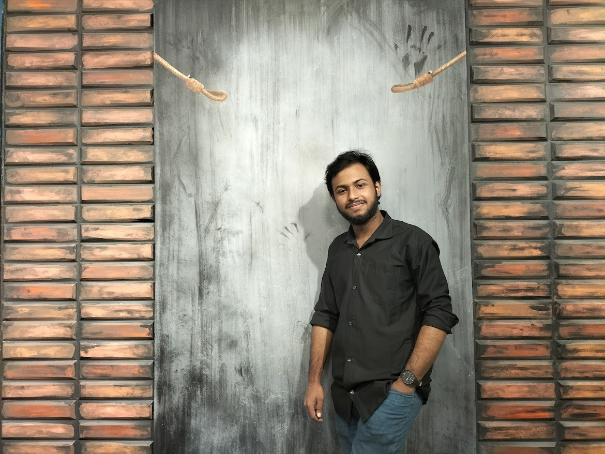

Personal Biography
I connect software engineering with service reliability and research curiosity.
I am Tawfiq Hassan Nayem, based in Dhaka, Bangladesh. I graduated in Computer Science and Engineering from World University of Bangladesh with a CGPA of 3.65 out of 4.00.
Currently, I work as a Technology Engineer at Infozillion Teletech BD Ltd., supporting telecom technology operations, service platform monitoring, troubleshooting, and process improvement. Alongside that, I coordinate business development activities at Connectiya, including internship partnerships, recruitment support, and stakeholder communication.
I am also active in AI and healthcare research, with interests in explainable AI, machine learning fundamentals, scientific writing, and practical healthcare technology.
Existing Clients
Organizations and collaboration areas
Skills
A practical mix of development, systems, research, and leadership.
Skill levels represent confidence and working familiarity across academic, professional, and project experience.